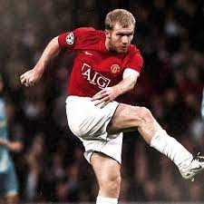
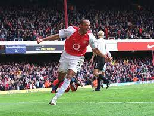
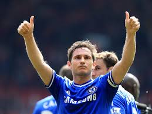
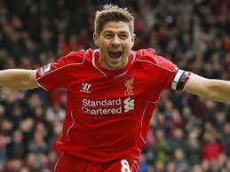
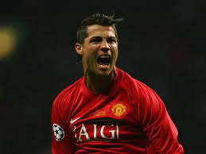

En el vertiginoso mundo del fútbol inglés, la Premier League ha sido testigo de innumerables momentos épicos a lo largo de los años. Desde los gloriosos días del Manchester United bajo el mando de Sir Alex Ferguson hasta el impresionante invicto del Arsenal en la temporada 2003-2004, la liga ha sido un escenario para la grandeza y la emoción.
El legado de Sir Alex Ferguson en el Manchester United es una parte inseparable de la historia de la Premier League. Durante su tiempo al mando, el United conquistó numerosos títulos de liga y se convirtió en un sinónimo de dominio en el fútbol inglés. Con jugadores legendarios como Ryan Giggs, Paul Scholes y Cristiano Ronaldo, el United marcó una época y dejó una huella imborrable en la memoria de los aficionados al fútbol.
Pero la Premier League también ha sido testigo de momentos de sorpresa y emoción, como el invicto del Arsenal en la temporada 2003-2004. Bajo la dirección de Arsène Wenger, los Gunners lograron una hazaña extraordinaria al permanecer invictos durante toda la temporada, un logro que pocos equipos han igualado en la historia del fútbol inglés.
El ascenso meteórico del Chelsea bajo la dirección de Jose Mourinho también dejó una marca indeleble en la historia de la Premier League. Con una combinación de talento excepcional y tácticas innovadoras, Mourinho llevó al Chelsea a nuevas alturas, asegurando varios títulos de liga y estableciendo al equipo como una fuerza dominante en el fútbol inglés.
Sin embargo, uno de los momentos más sorprendentes en la historia reciente de la Premier League fue el improbable campeonato del Leicester City en la temporada 2015-2016. Bajo el liderazgo de Claudio Ranieri, el equipo desafió todas las expectativas para superar a los gigantes del fútbol inglés y reclamar el título de liga en una de las mayores historias de éxito en la historia del deporte.
En años más recientes, el Liverpool y el Manchester City han dominado la escena de la Premier League bajo la dirección de Jurgen Klopp y Pep Guardiola respectivamente. Con un fútbol electrizante y un enfoque implacable, ambos equipos han demostrado su clase y han elevado el estándar de la competencia en la liga, dejando a los aficionados asombrados con su habilidad y determinación. En una liga llena de momentos memorables, estos equipos han escrito sus propios capítulos en la historia del fútbol inglés, dejando un legado perdurable que será recordado por generaciones venideras.
La historia de la Premier League está repleta de jugadores legendarios que han dejado una marca indeleble en el fútbol inglés y mundial. Alan Shearer, conocido por su instinto goleador y su habilidad para anotar desde cualquier posición, dejó una huella imborrable en el fútbol inglés durante su tiempo con el Blackburn Rovers y el Newcastle United. Paul Scholes, el maestro del medio campo del Manchester United, reconocido por su visión de juego excepcional y su capacidad para dictar el ritmo del partido con precisos pases y tiros a gol. Thierry Henry, el elegante delantero francés que brilló con el Arsenal durante su carrera en la liga. Henry es recordado por su velocidad, habilidad técnica y capacidad para marcar goles espectaculares.
Steven Gerrard, quien personificó la pasión y el compromiso del Liverpool durante su carrera. Gerrard fue un líder en el campo, con una habilidad excepcional para marcar goles importantes y dictar el ritmo del juego desde el centro del campo. Asimismo, Frank Lampard, icono del Chelsea, se erige como uno de los mediocampistas más prolíficos de la liga, destacando por su incansable ética de trabajo y su habilidad para llegar al área rival con peligro, convirtiéndose en un referente indiscutible del club londinense. En el panteón de jugadores estelares también se alza Cristiano Ronaldo, cuyo impacto en la Premier League fue innegable durante su paso por el Manchester United. Ronaldo deslumbró con su velocidad, destreza técnica y capacidad goleadora, ganándose el respeto y la admiración de aficionados y rivales por igual.